Scaling Test-Time Compute
In this blog post, I share my reproduction of huggingface blogpost-scaling-test-time-compute. The goal is to show that with more generated tokens, the performance of a smaller model can approach that of a larger model.
Takeaways
- Answer Extraction: Parsing the final answer out of raw LLM responses is often non-trivial, as different models or prompt formats can wrap the result in extra tokens.
- Special Tokens: Be mindful of tokens like
<|begin_of_text|>that may appear in outputs for some models. - Smaller Models Benefit More: When we sample multiple solutions, smaller models see a larger relative improvement in accuracy compared to bigger models.
- Bigger Models Still Win: Even after scaling smaller models heavily at inference, bigger models can still achieve higher absolute accuracy.
- FLOPs Analysis: Realistically, sampling many candidate solutions quickly becomes computationally expensive. Will scaling the test-time computing improve the performance in terms of flops?
- The code is available at this github repo.
Dataset and model
dataset
The dataset used in this experiment is HuggingFaceH4/MATH-500. It consists of 500 problems from the MATH benchmark, each containing:
problem: Convert the point $(0,3)$ in rectangular coordinates to polar coordinates. Enter your answer in the form $(r,\theta),$ where $r > 0$ and $0 \le \theta < 2 \pi.$
solution: We have that $r = \sqrt{0^2 + 3^2} = 3.$ Also, if we draw the line connecting the origin and $(0,3),$ this line makes an angle of $\frac{\pi}{2}$ with the positive $x$-axis. [asy] unitsize(0.8 cm); draw((-0.5,0)--(3.5,0)); draw((0,-0.5)--(0,3.5)); draw(arc((0,0),3,0,90),red,Arrow(6)); dot((0,3), red); label("$(0,3)$", (0,3), W); dot((3,0), red); [/asy] Therefore, the polar coordinates are $\boxed{\left( 3, \frac{\pi}{2} \right)}.$
answer: \left( 3, \frac{\pi}{2} \right)Large language models
I evaluate two models Llama and Qwen with different sizes:
Llama
Qwen
Reward model
The model is trained from meta-llama/Llama-3.1-8B-Instruct on RLHFlow/Deepseek-PRM-Data for 1 epochs. This model can be used for ORM and PRM. ORM evaluates the final solution, while PRM measures logical correctness at each computation step.
- ORM: extract the probability of
"+"from the assistant. It represents the outcome reward score for this answer.
[
{"role": "user", "content": "Convert the point $(0,3)$ in rectangular coordinates to polar coordinates. To convert from rectangular coordinates $(x, y)$ to polar coordinates $(r, \\theta)$, we can use the formulas\n\\[r = \\sqrt{x^2 + y^2}\\]\n\\[\\theta = \\arctan \\frac{y}{x}\\]\n\nIn this case, the rectangular coordinates are $(0,3)$, so $x = 0$ and $y = 3$. \n\nFirst, we calculate $r$:\n\\[r = \\sqrt{0^2 + 3^2} = \\sqrt{9} = 3\\]\n\nNext, we calculate $\\theta$:\n\\[\\theta = \\arctan \\frac{3}{0}\\]\nSince the tangent function is not defined for $x = 0$, we need to use a special case. When $x = 0$, $\\theta = \\frac{\\pi}{2}$ if $y > 0$, and $\\theta = \\frac{3\\pi}{2}$ if $y < 0$. In this case, $y = 3 > 0$, so $\\theta = \\frac{\\pi}{2}$.\n\nSo, the polar coordinates equivalent to $(0,3)$ are $\\boxed{(3,\\frac{\\pi}{2})}$."},
{"role": "assistant", "content": "+"},
]- PRM: computes step-wise reward scores by analyzing each interaction. extract the probability of
"+"from the assistant in each turn.
[
{"role": "user", "content": "Convert the point $(0,3)$ in rectangular coordinates to polar coordinates. To convert from rectangular coordinates $(x, y)$ to polar coordinates $(r, \\theta)$, we can use the formulas\n\\[r = \\sqrt{x^2 + y^2}\\]\n\\[\\theta = \\arctan \\frac{y}{x}\\]"},
{"role": "assistant", "content": "+"},
{"role": "user", "content": "In this case, the rectangular coordinates are $(0,3)$, so $x = 0$ and $y = 3$."},
{"role": "assistant", "content": "+"},
{"role": "user", "content": "In this case, $y = 3 > 0$, so $\\theta = \\frac{\\pi}{2}$."},
{"role": "assistant", "content": "+"},
{"role": "user", "content": "So, the polar coordinates equivalent to $(0,3)$ are $\\boxed{(3,\\frac{\\pi}{2})}$."},
{"role": "assistant", "content": "+"},
]Test-time scaling strategies
majority voting
- generate candidate solutions and pick the most frequent answer
best of :
- (vanilla) generate candidates and pick the one with the highest score
- (weighted) generate candidates and group the indentical answers, then pick the one with the highest score
Beam search:
- [WIP]
Reproduce results
obersevations
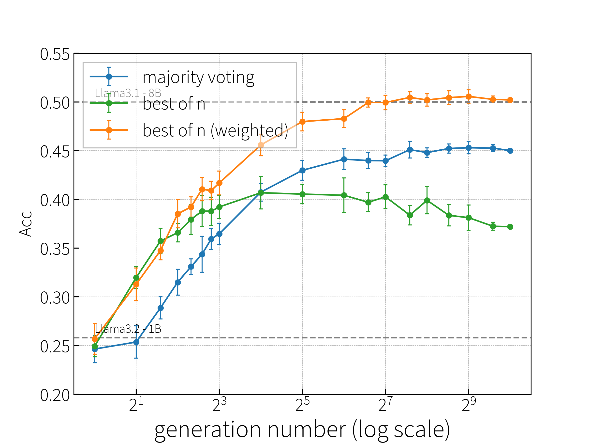
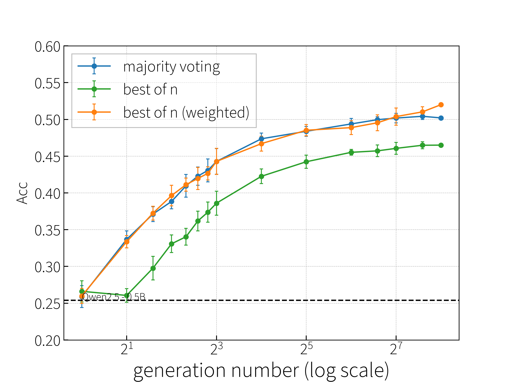
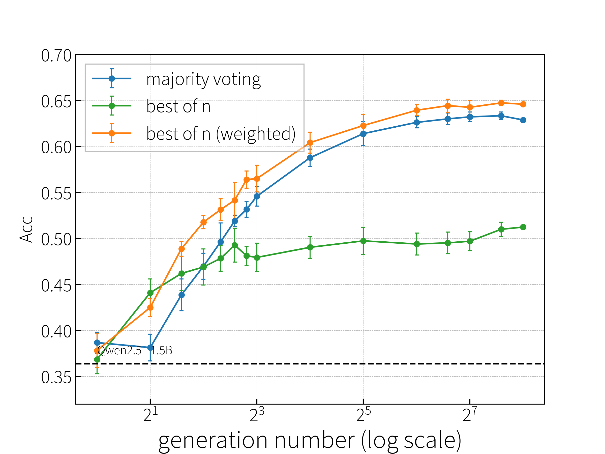
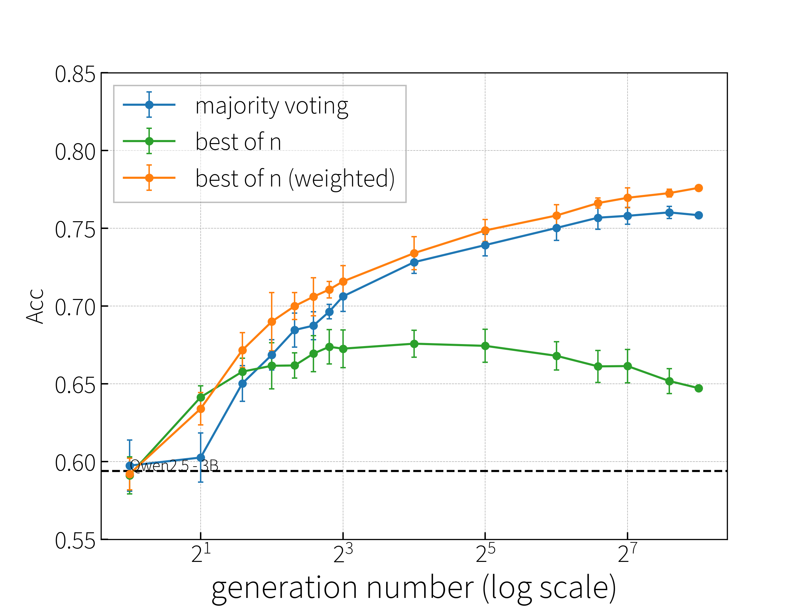
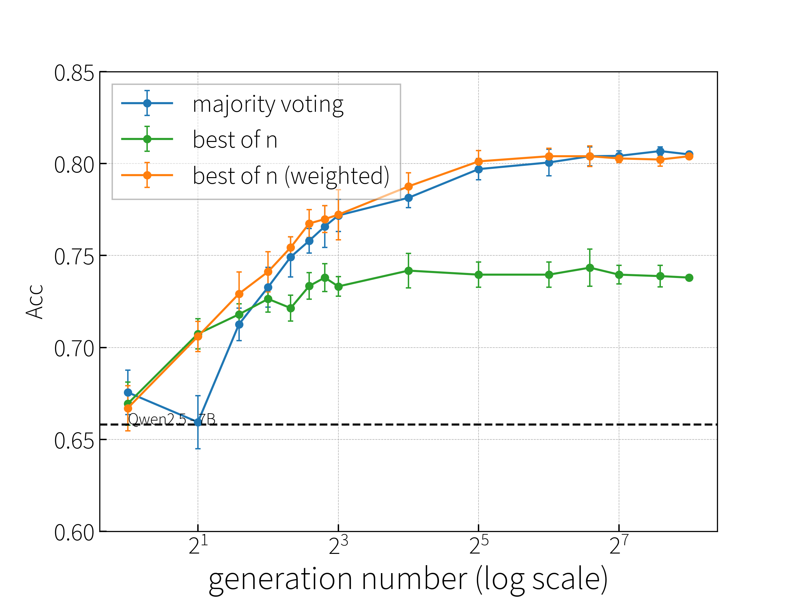
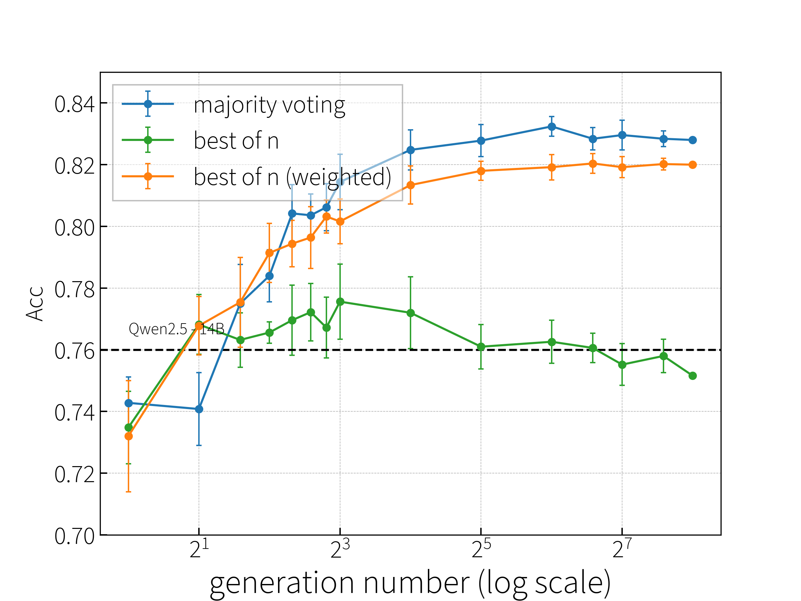
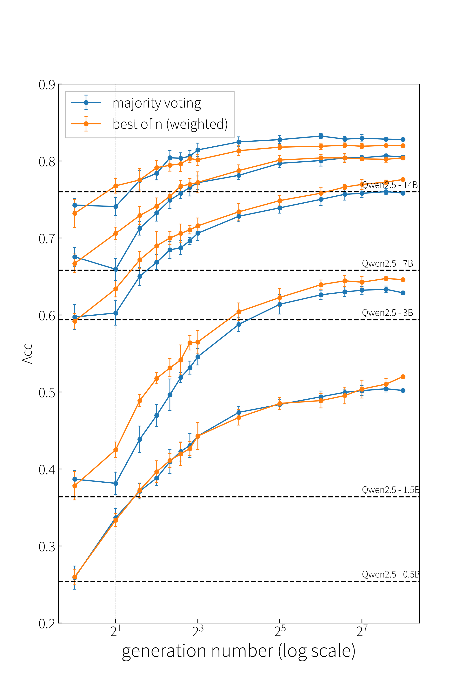
Performance improvement in terms of flops?
A natural question: Does scaling the test-time compute yield consistent improvements if we measure actual FLOPs cost rather than just the number of generated tokens?
Different model sizes have different computational demands. Additionally, for inference, the FLOPs for prefill (the forward pass over the prompt) and decoding (token-by-token generation) are quite different. For the PRM approach, there’s an extra overhead of the reward model forward pass. For different size of models, the inference flops may not be liner to the model size. thus I want to see if the performance improvement in terms of flops is consistent with the number of generated tokens.
- for majority voting, the total FLOPs is prefill FLOPs + decode FLOPs N.
- for weighted best-of-N, the total FLOPs is prefill FLOPs + decode FLOPs N + prm FLOPs N.
where is the number of samples generated.
LLM FLOPs estimation
I estimated the FLOPs of the forward pass for prefill and decoding stages as follows. The equation and the anylysis are based on this paper arXiv.
During the following analysis, I use the following notations:
- is the batch size
- is the input sequence length
- is the hidden size
- is the FFN intermediate size
- is the number of heads
- is the size of each head ()
For prefill stage, the equations and corresponding FLOPs are:
For decoding stage, the equations and corresponding FLOPs are:
| “-” | |
For MATH-500 dataset, The FLOPs of the forward pass can be estimated as follows:
I compute the FLOPs of the forward pass for batch size is . Then
Thus I use the following formula to compute the total FLOPs:
where is the length of the problem prompt, and is the number of tokens we generate for the solution.
results
Below, we re-plot the same data—accuracy vs. total FLOPs—for Qwen2.5 of various sizes. The left endpoint of each curve (for majority voting) corresponds to the minimal compute cost of a greedy decoding (). As the inference time move right, (ideally) smaller models with less flops can achieve similar performance to larger models with more flops.
The results are shown below:
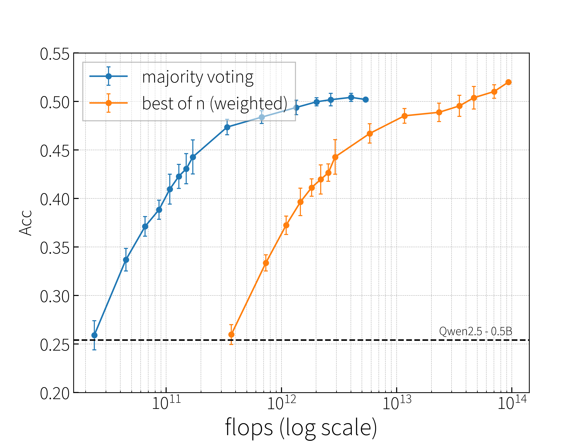
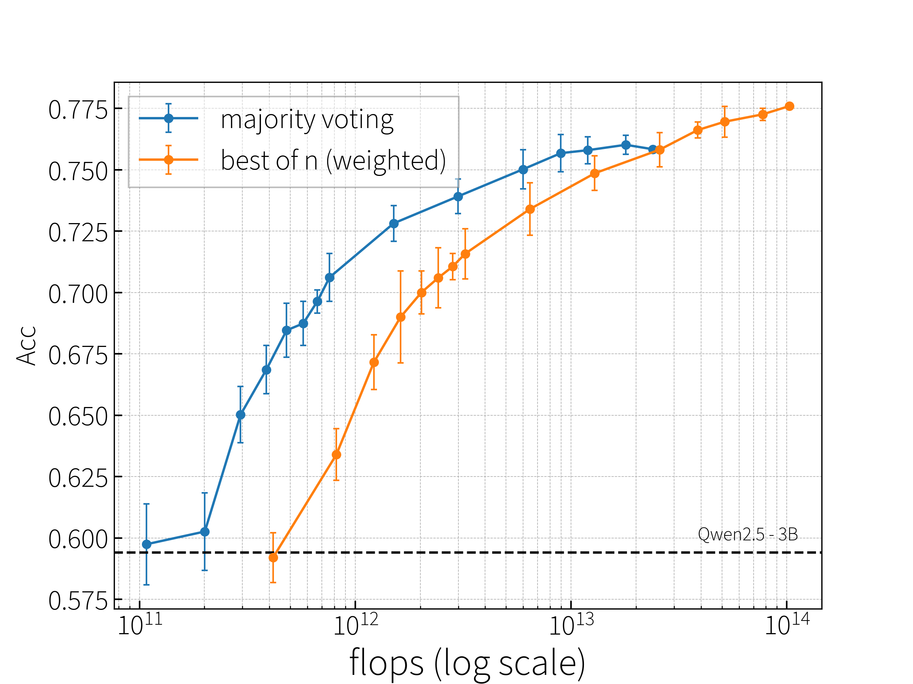
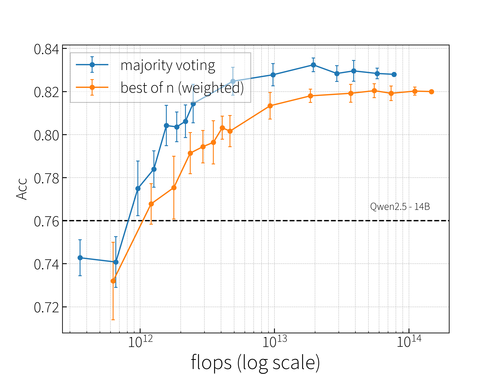
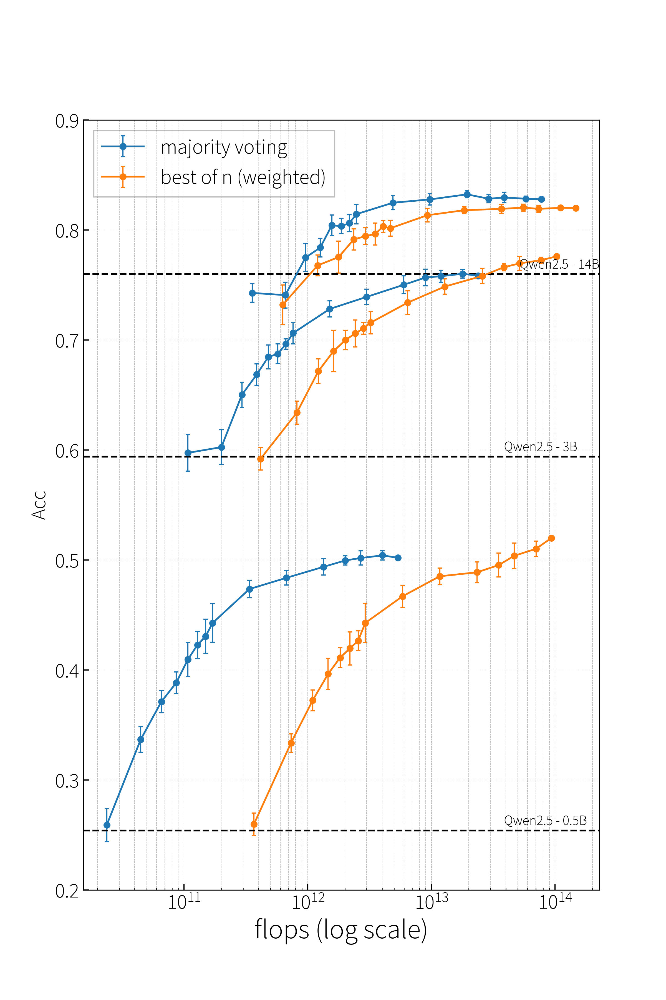
obersevations
- Majority Voting seems to achieve a slightly better cost-to-performance trade-off than Weighted Best-of-N (in some cases). The overhead of scoring each candidate can become significant if is large.
- Scaling for smaller models remains beneficial, but diminishing returns do appear at higher . If you keep increasing , you might pay a lot more FLOPs for only marginal accuracy gains.
- Larger model vs. scaled smaller model: Even if a smaller model is heavily scaled in test-time compute, a properly sized larger model may still achieve a strictly higher accuracy while also being less or similarly expensive in total FLOPs.
Summary
This reproduction reaffirms the main conclusion from the Hugging Face blog post: scaling test-time compute (by sampling multiple solutions and picking the best or majority) can improve accuracy, especially for smaller models. Yet, these improvements don’t entirely overcome the fundamental quality gap between smaller and larger models.
We further demonstrate how analyzing FLOPs clarifies the computational trade-offs in test-time scaling. It’s not always free to sample or evaluate more solutions. Practitioners need to weigh the cost-to-benefit ratio carefully, particularly if they aim to deploy these methods at scale.